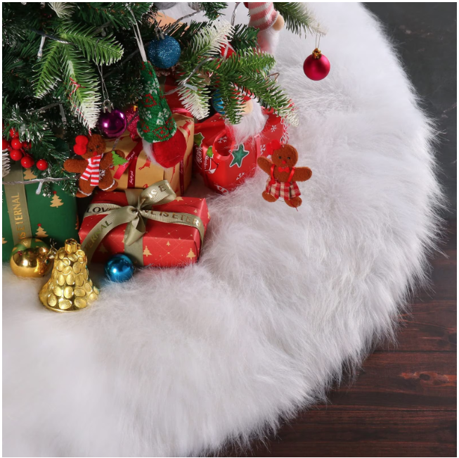

Covoraș Decorativ pentru Bradul de Crăciun
Covoraș decorativ pentru bradul de Crăciun, din blană artificială albă, 50 × 50 cm, cu textură pufoasă și efect vizual de zăpadă.
Prețul și stocul sunt afișate conform catalogului. Confirmă disponibilitatea, cantitatea și condițiile comerciale înainte de comandă.
DETALII PRODUS
Descriere
Covorașul decorativ pentru bradul de Crăciun, din blană artificială albă, este un accesoriu sezonier conceput pentru amenajarea și înfrumusețarea spațiului de la baza bradului. Cu dimensiunile de 50 × 50 cm, produsul oferă o suprafață decorativă pufoasă, care completează aranjamentele festive și contribuie la crearea unei atmosfere specifice sărbătorilor de iarnă.
Aspectul său alb, cu textură moale și fire lungi, imită vizual un strat de zăpadă, oferind un contrast plăcut cu ramurile verzi ale bradului, globurile colorate și cadourile de Crăciun.
Covorașul poate fi poziționat sub brad, în jurul suportului acestuia, fiind potrivit pentru decorarea locuințelor, vitrinelor comerciale și a altor spații amenajate festiv.
Efect decorativ de zăpadă pentru un brad de Crăciun elegant
Principalul avantaj al covorașului este aspectul său de blană artificială albă, care reproduce vizual textura pufoasă a zăpezii.
Suprafața cu fire lungi creează un efect decorativ voluminos și oferă bazei bradului un aspect mai îngrijit.
Culoarea albă permite integrarea produsului în diferite stiluri de amenajare:
- Decor clasic de Crăciun: în combinație cu globuri roșii, aurii și verzi.
- Decor elegant: alături de ornamente argintii, albe și lumini calde.
- Decor scandinav: potrivit pentru amenajări minimaliste, cu materiale naturale.
- Decor modern: în combinație cu accesorii metalizate și ornamente geometrice.
- Decor festiv tradițional: completează aranjamentele cu cadouri, figurine și alte accesorii de sezon.
Textura pufoasă contribuie la evidențierea ornamentelor și a cadourilor amplasate în apropierea bradului.
Acoperirea decorativă a bazei și suportului bradului
Covorașul este conceput pentru amplasarea în zona inferioară a bradului, unde poate contribui la mascarea vizuală a suportului și la organizarea aranjamentului decorativ.
În funcție de dimensiunea bradului și de configurația suportului, produsul poate fi poziționat astfel încât să completeze aspectul zonei de la bază.
Suprafața albă creează un fundal potrivit pentru cutii de cadouri, figurine tematice, globuri decorative și alte obiecte specifice sărbătorilor.
Dimensiunea de 50 × 50 cm îl recomandă în special pentru aranjamente compacte și brazi de dimensiuni compatibile, unde se dorește o completare decorativă fără ocuparea unei suprafețe extinse.
Textură pufoasă și aspect plăcut la atingere
Materialul cu aspect de blană artificială conferă covorașului o textură bogată, caracterizată prin fire decorative lungi și un finisaj alb uniform.
Construcția textilă permite așezarea produsului pe suprafețe plane, precum parchet, gresie sau alte pardoseli interioare.
Firele decorative creează volum și contribuie la un efect vizual asemănător zăpezii proaspete.
Spre deosebire de suporturile decorative rigide, covorașul textil poate fi pliat și depozitat după încheierea sezonului festiv, în funcție de recomandările de întreținere ale producătorului.
Utilizare versatilă pentru amenajări festive
Covorașul alb pentru brad poate fi integrat în diferite aranjamente de Crăciun, atât în spații rezidențiale, cât și în zone comerciale.
În locuințe
Poate completa decorul bradului amplasat în living, dormitor sau în alte încăperi amenajate pentru sărbători.
În vitrine comerciale
Poate fi utilizat ca element decorativ în jurul brazilor artificiali, al cutiilor de cadouri și al figurinelor tematice.
În spații de birouri
Contribuie la amenajarea unor colțuri festive compacte, alături de brazi decorativi și instalații luminoase.
În decoruri fotografice
Suprafața albă și pufoasă poate fi folosită ca fundal pentru fotografierea ornamentelor, cadourilor și a altor accesorii de Crăciun.
Avantaje și caracteristici principale
- Aspect de zăpadă artificială: creează un efect decorativ specific iernii.
- Textură pufoasă: suprafață cu fire lungi, cu aspect de blană.
- Culoare albă: potrivită pentru diferite combinații de ornamente.
- Format compact: pentru aranjamente festive de dimensiuni reduse.
- Utilizare decorativă: poate masca vizual o parte a suportului bradului.
- Design versatil: compatibil vizual cu decoruri clasice, moderne sau minimaliste.
- Material textil flexibil: permite manipularea și depozitarea sezonieră.
- Reutilizabil: conceput pentru folosire în mai multe sezoane, cu întreținere adecvată.
- Integrare în decoruri comerciale: potrivit pentru vitrine și prezentări tematice.
Comandă și informații
Site-ul funcționează ca un catalog B2B. Nu există plată online sau coș de cumpărături. Stoc declarat: 0 buc. Confirmă disponibilitatea înainte de comandă.
Discută pe WhatsApp →DIN ACEEAȘI CATEGORIE